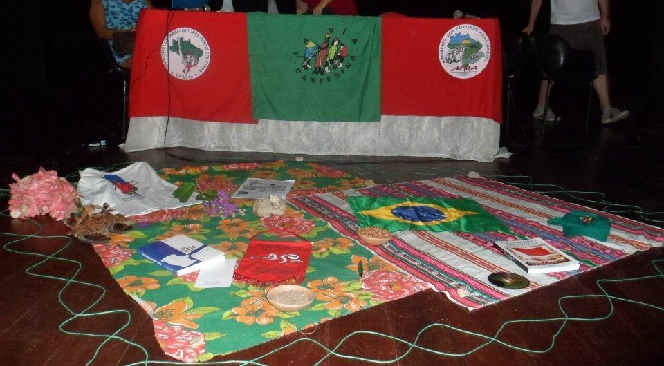
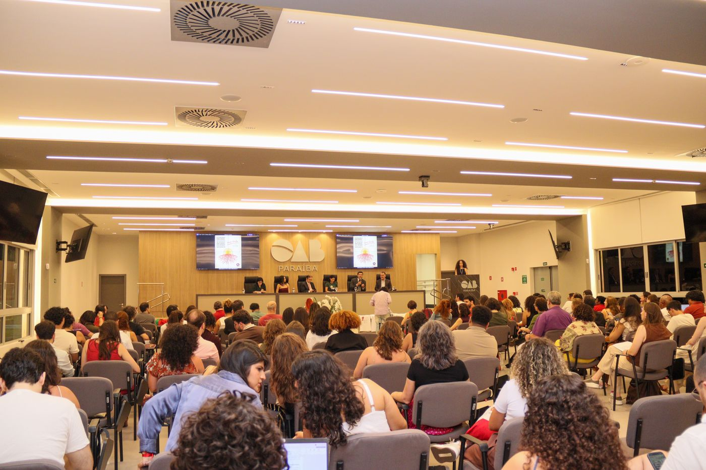
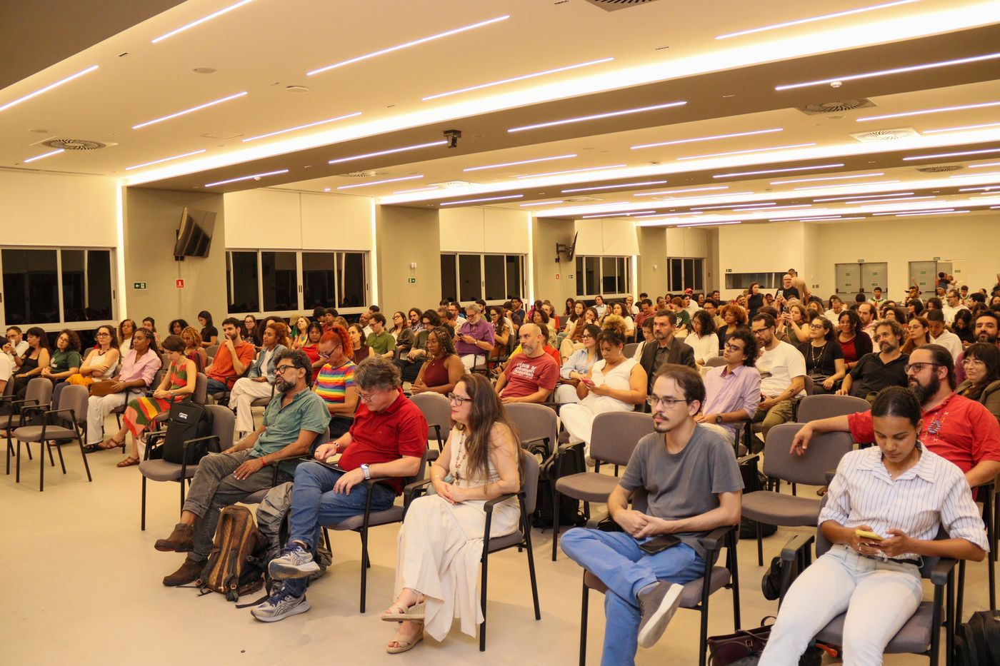
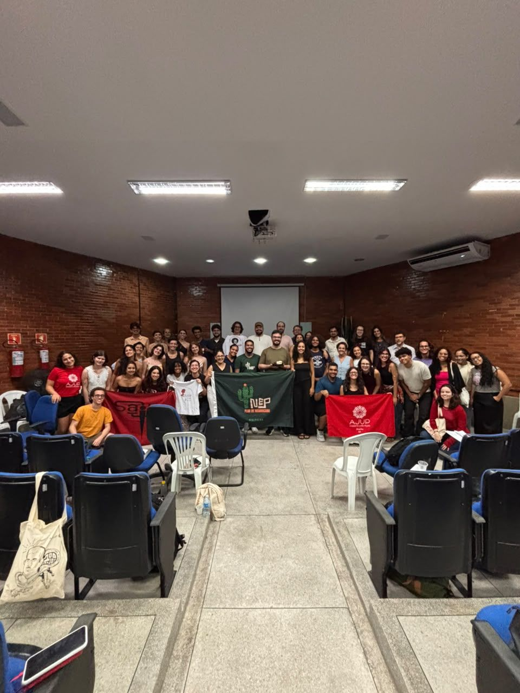
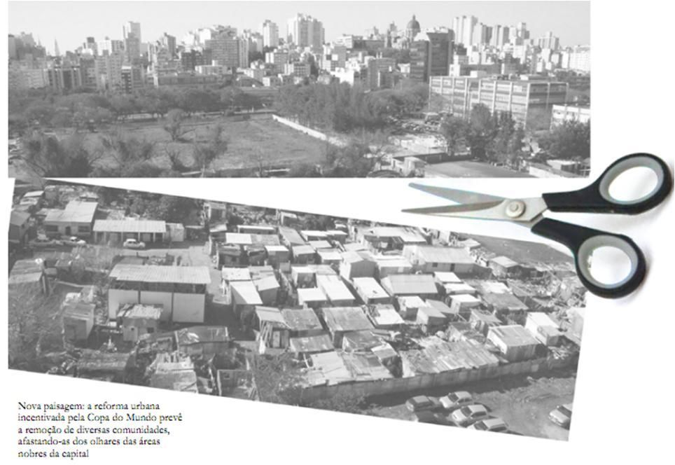
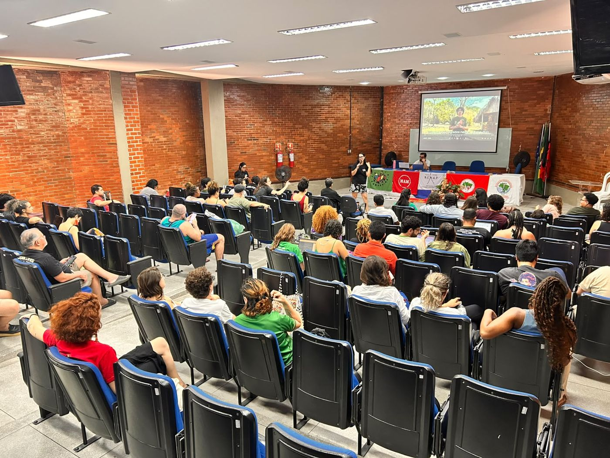
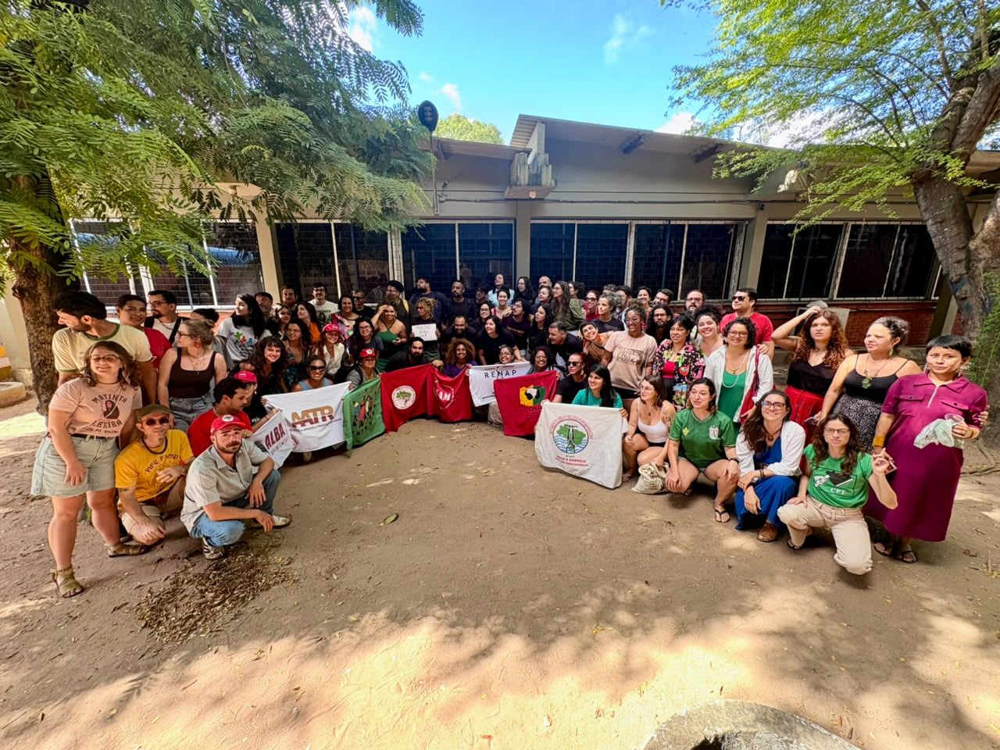
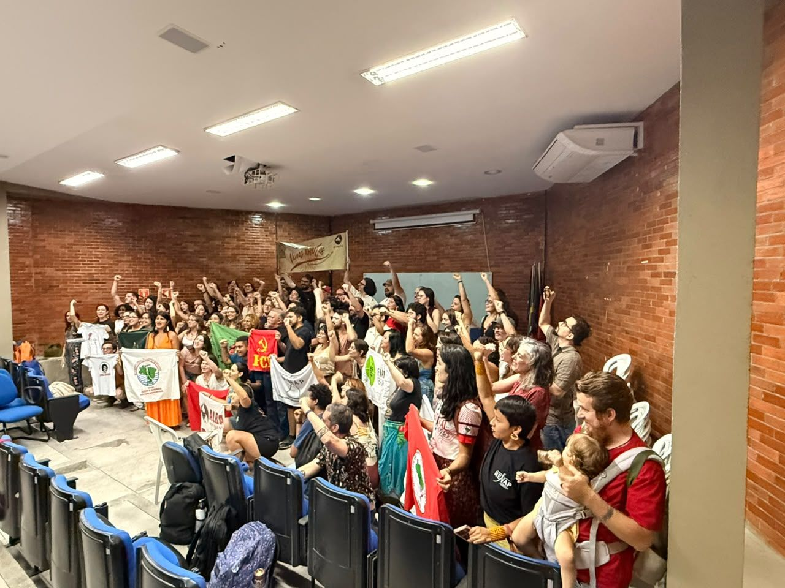
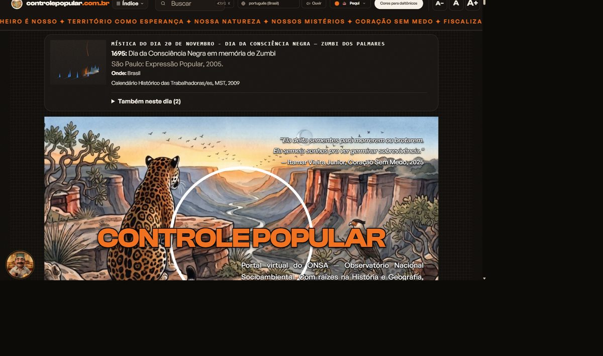

Mística do dia
Acervo
Assessoria Jurídica Popular








Fotos de posts do blog e do seminário do IPDMS, 2026
Textos publicados no blog Assessoria Jurídica Popular desde 2009, com autor, data, link para o original e crédito de cada parceria.
Em uma frase: é o trabalho de advogados, estudantes e educadores com movimentos sociais para realizar direitos — e a porta de entrada é esta coleção.
Busca por palavra-chave, tipo, ano e ordem. Cada texto com autor, data e link para o original.
Explorar o acervo ↓ SeçãoAssessoria jurídica popular
97 textos SeçãoDireitos humanos
76 textos SeçãoMovimentos sociais
170 textos SeçãoTeoria crítica
182 textos Em ordemBlog
713 textos em 12 anos SeçãoMemória e cultura
30 textos SeçãoEducação popular
158 textos ConsultaGlossário
18 verbetes Série históricaLinha do tempo
2009–2024 PesquisaDireito comparado
4 perspectivas AntologiaPoemas
135 poemasReferências e parceiros
De onde vêm os dados e com quem caminhamos

Fonte parceiraControle Popular
Dados públicos, jurisprudência e biblioteca, com fonte e metodologia abertas.
 Curadoria
Curadoria
IPDMS — GT de Assessoria Jurídica Popular
Pesquisa, direitos e movimentos sociais: a parceria que organiza este acervo.
Fonte originalBlog Assessoria Jurídica Popular
Onde os textos foram publicados, de 2009 a 2024. Cada página leva de volta.
Arraste para girar
Do blog ao novo site
O caminho deste acervo, em três paradas
Pergunte ao acervo
Respostas rápidas, com fonte e link
Olá! Escolha uma pergunta abaixo ou escreva a sua. As respostas curadas têm link para o texto original.